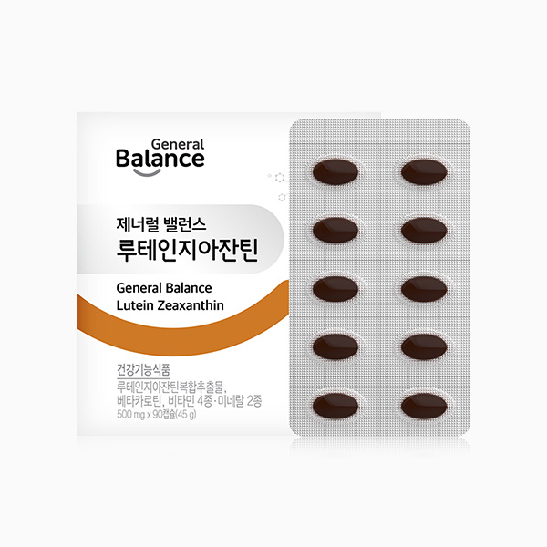

제너럴 밸런스 루테인지아잔틴
8중 기능성 식물성 캡슐 루테인지아잔틴
- 회원가입 없이 회원가
- 지쿱 본사 정품 직접 발송
- 5만 원 이상 무료배송
제너럴 밸런스 루테인지아잔틴 상세 설명 · 원료와 특징
제너럴 밸런스 루테인지아잔틴 눈건강의 핵심, 루테인과 지아잔틴을 한 번에 눈 건강을 위한 최적 배합 황반의 중심 구성 물질인 루테인과 지아잔틴을 한 번에 총 8중 복합기능성 엄선한 부원료 함유 젤라틴, 합성향료 배제한 식물성 캡슐 기능성원료 루테인지아잔틴 복합추출물의 인체적용시험 결과 주요성분 루테인지아잔틴이란?
1. 루테인이란?
마리골드꽃에서 추출한 루테인은 황색 색소의 호르몬으로 시세포 대부분이 모여 있어 시력에 중요한 역할을 하는 황반의 재료가 됩니다. 루테인을 섭취하면 노화로 인해 감소될 수 있는 눈 건강에 도움을 줄 수 있습니다.
2. 지아잔틴이란?
지아잔틴 역시 루테인과 마찬가지로 황반을 구성하는 물질로서 중심 시력을 담당합니다. 체내에서 생성되지 않기 때문에 반드시 외부에서 보충을 해야 하는데, 식단만으로 하루 권장량을 충족하기 어렵다면 건강기능식품을 통해 섭취하면 됩니다.
3. 황반 시력의 90%를 담당하는 곳으로 망막의 중심부에 위치해 있고 시세포가 밀집해 있는 곳을 의미합니다.
지아잔틴 황반 중심에는 지아잔틴이 집중되어 있습니다.
루테인 주변부로 갈수록 루테인이 밀집해 있습니다.
* 제품정보와 관련 없는 건강정보입니다.
황반의 중심 구성 물질인 루테인과 지아잔틴을 한 번에 개별인정 원료 루테인지아잔틴복합추출물(제2018-4호) 식약처 고시 기준 하루 최대 허용치인 20 mg 함유(루테인과 지아잔틴의 합)하고 있으며 그중 지아잔틴 함량이 높은 마리골드꽃에서 추출한 100% 루테인과 지아잔틴을 함유 하고 있습니다.
총 8중 복합기능성 개별인정 원료 루테인지아잔틴복합추출물(제2018-4호) 식약처 고시 기준 하루 최대 허용치인 20 mg과 눈 건강에 도움을 주는 베타카로틴·비타민A, 에너지대사를 올려주는 비타민B6, 항산화 성분 비타민E· 비타민C· 셀렌, 정상적인 면역기능에 필요한 아연 함유되어 있습니다.
베타 카로틴 비타민 A 비타민 B6 비타민 C 비타민 E 아연 셀렌 눈에 좋은 엄선된 부원료 함유 부원료 (토마토추출물분말, 결명자추출물분말, 블루베리추출분말, 빌베리추출분말)이 함유 되어 있습니다.
젤라틴, 합성향료 배제한 식물성 캡슐 우피, 돈피, 어피 캡슐이 아닌 홍조류에서 추출한 카라기난과 전분을 사용한 식물성 연질캡슐로 제조 됩니다.
젤라틴 우피 돈피 어피 합성향료 홍조류에서 추출한 식물성 소화 가 잘 됩니다.
열에 강해서 장기간 보관 시 모양이 변하거나 서로 달라붙지 않습니다.
기능성원료 루테인지아잔틴복합추출물의 인체적용시험 결과 성인 남·여성 30명을 대상으로 6개월(24주) 간 루테인지아잔틴복합추출물을 섭취시킨 결과, 눈 건강(황반색소 밀도 유지) 관련 지표에서 대조군 대비 유의적으로 개선됨을 확인 하였습니다.
24주 간의인체적용 시험을 통하여 기능성 입증 MPOD의 변화량 대조군 시험군 (XanMAX 2002) 시험군 ※ 루테인 지아진틴 복합추출물 (제2018-4호)을 섭취한 그룹은 180일 후 황반색소 밀도가 복용 전과 비교하여 44.9% 증가하였으며, 대조군과 통계적인 유의성(p<0.001)이 있는 차이를 보였습니다.
[출처] A randomized, double blind, placebo controlled, parallel study to evaluate the comparative 2002 oral soft gel capsule with that of a placebo soft gel capsule efficacy of XanMax improving MPOD levels in elderly volunteers.
브랜드 스토리 불규칙한 생활습관을 가진 현대인의 몸속 밸런스를 맞추어 주는 건강한 습관 제너럴 밸런스입니다.
스트레스, 영양불균형, 환경오염 등의 원인으로 흐트러진 현대인의 생활패턴으로부터 건강의 균형을 되찾고 기능성과 안전성이 모두 검증된 제품으로 국내뿐만 아니라 전 세계의 건강을 지향합니다.
건강 정보 황반 변성이란?
눈은 신체기관 중 노화가 가장 빨리 일어나는 곳이므로 주의가 필요합니다. 나이 들수록 특히 신경 써야하는 부분이 눈의 '황반'입니다. 황반은 빛을 가장 선명하고 정확하게 받아들임과 동시에 물체의 상이 맺히는 곳으로 시력 유지에 중요한 역할을 합니다.
황반은 ‘루테인’과 ‘지아잔틴’이라는 색소로 구성돼있는데 나이 들수록 그 밀도가 떨어지면서 '황반 변성'이라는 질환으로 이어질 수 있습니다.
실제 50~60대의 황반 색소 밀도가 20대의 절반 수준이라는 연구 결과가 있습니다.
시간이 지날수록 떨어지는 황반색 밀도 20-30대 30-40대 40-50대 50-60대 [출처] risk factors in age-related maculopathy are associated with a relative lack of macular pigment 이런 분들께 권해드립니다.
황반 성분 보충으로 건강한 눈 유지를 원하시는 분 나이가 들어감에 따라 눈 건강이 걱정되시는 분 장시간 컴퓨터 작업 및 스마트폰을 오래 사용하시는 분 야간 운전 및 장시간 운전하시는 분 독서 및 공부로 눈이 피로한 분 눈이 침침하고 희미해지시는 분 야외활동이 많아 자외선에 자주 노출되는 분 소화와 흡수가 용이한 식물성 캡슐 제품을 원하시는 분 각종 인증 사항 비코프인증 획득!
비코프인증(B-Corp Certified) 이란?
B-Corp은 비즈니스를 통해 사회 환경적 문제를 해결하고 사회에 긍정적인 영향을 끼치는 기업을 확대하기 위해서 2007년 BLab (미국비영리 조직)이 만든 글로벌 사회적 기업 인증 제도입니다.
가족친화우수기업 인증 획득!
가족친화인증 가족친화제도를 모범적으로 운영하는 기업 및 공공기관에 대하여 심사를 통해 인증을 부여하는 제도입니다. 가족친화인증 기업은 근로자가 일에 집중하도록 하여 기업 생산성과 경쟁력 강화하고 출산율 제고, 고용 안정 등으로 국가경제 발전에 기여할 뿐 아니라 가족친화경영 확산을 통한 근로자와 가족 구성원의 삶의 질을 향상시키는 바른 기업 문화를 확산 시킵니다.
건강기능식품 건강기능식품은 건강을 유지하고 개선하는데 도움을 주는 식품으로 식품의약품안전처에서 기능성과 안전성을 평가해 인정한 제품입니다.
GMP (우수건강기능식품제조기준) GMP는 우수한 품질의 건강기능식품을 제조하기 위한 기준으로 작업장 구조와 설비를 비롯해 원료 구입부터 생산ㆍ포장ㆍ출하까지 전 공정에 걸친 체계적인 관리 기준입니다.
지쿱 본사 제품 상세페이지 내용을 옮겨 정리했어요.
상품정보제공고시
| 품명 | 제너럴 밸런스 루테인지아잔틴 |
|---|---|
| 식품의 유형 | 건강기능 식품/루테인지아잔틴복합추출물, 베타카로틴, 비타민 A, 비타민 B6, 비타민 C, 비타민 E, 아연, 셀렌 |
| 건강기능식품유통전문판매원 | (판매원) 제너럴바이오(주)/전라북도 남원시 송동면 용투산로254 |
| 건강기능식품전문제조원 | (주)노바렉스 2공장/충북 청주시 청원구 오창읍 각리1길 60 |
| 제조연월일, 유통기한 또는 소비기한(품질 유지기한) | 제품에 별도 표기 |
| 포장단위별 용량(중량), 수량 | 500mg x 90캡슐(45g) |
| 원재료명 및 함량(농수산물의 원산지 표시에 관한 법률에 따른 원산지 표기 포함) | 루테인 지아잔틴복합추출물 [기능성원료 인정제2018-11호, 인도산/루테인지아잔틴복합추출물, 해바라 기유, d-토코페롤(혼합형)], 비타민C,건조효모(셀렌함유, 캐나다산), d-α-토코페롤, 베타카로틴오 일, 혼합제제(비타민A팔미테이트, 땅콩오일, dl-α-토코페롤), 산화아연, 비타민B6염산염, 포도씨 유(스페인산), 백납,블루베리농축분말, 빌베리추출물, 토마토농축분말, 결명자추출분말 [캡슐기제] 정제수, 변성전분, 글리세린, 카라기난, 덱스트린, 카카오색소 |
| 영양정보 | 1일 섭취량 : 1캡슐(500 mg) 1회 섭취량당 함량 : 열량 0 kcal, 탄수화물 0 g(0 %), 단백질 0 g(0 %), 지방 0 g(0 %), 나트륨 0 mg(0 %), 루테인 18.2 mg, 지아잔틴 1.8 mg, 베타카로틴 1 mg, 비타민 A 1,000 ㎍ RE(143 %), 비타민 B6 0.45 mg(30 %), 비타민 C 30 mg(30 %), 비타민 E 3.3 mg α-TE(30 %), 아연 2.55 mg(30 %), 셀렌 16.5 ㎍(30 %) ※%영양성분 기준치/1일 영양성분기준치에 대한 비율 |
| 기능정보 | [루테인지아잔틴복합추출물] 노화로 인해 감소될 수 있는 황반색소밀도를 유지하여 눈 건강에 도움을 줄 수 있음 [베타카로틴] 어두운 곳에서 시각 적응을 위해 필요, 피부와 점막을 형성하고 기능을 유지하는데 필요, 상피세포의 성장과 발달에 필요 [비타민A] 어두운 곳에서 시각 적응을 위해 필요, 피부와 점막을 형성하고 기능을 유지하는데 필요, 상피세포의 성장과 발달에 필요 [비타민B6] 단백질 및 아미노산 이용에 필요, 혈액의 호모시스테인 수준을 정상으로 유지하는데 필요 [비타민E] 유해산소로부터 세포를 보호하는데 필요 [비타민C] 결합조직 형성과 기능유지에 필요, 철의 흡수에 필요, 유해산소로부터 세포를 보호하는데 필요 [셀렌] 유해산소로부터 세포를 보호하는데 필요 [아연] 정상적인 면역기능에 필요, 정상적인 세포분열에 필요 |
| 섭취량 및 섭취방법 | 1일 1회, 1회 1캡슐을 충분한 물과 함께 섭취하십시오. |
| 섭취 시 주의사항 및 부작용 가능성 | 1. 과다 섭취시 일시적으로 피부가 황변으로 변할 수 있습니다. 2. 질환이 있거나 의약품 복용 시 전문가와 상담하십시오. 3. 알레르기 체질 등은 개인에 따라 과민반응을 나타낼 수 있습니다. 특이체질, 알레르기 체질이신 분은 성분을 확인한 후 섭취하시기 바랍니다. 4. 영·유아, 어린이, 임산부 및 수유부는 섭취에 주의하십시오. 임산부는 섭취전 의사와 상담이 필요합니다. 5. 이상 사례 발생 시 섭취를 중단하고 전문가와 상담 하십시오. 6. 섭취량 및 섭취 방법을 확인하고 섭취하여 주십시오. 7. 유통기한이 경과된 제품은 섭취하지 마십시오. |
| 질병의 예방 및 치료를 위한 의약품이 아니라는 내용의 표현 | ※ 본 제품은 질병의 예방 및 치료를 위한 의약품이 아닌 건강기능식품입니다. |
| \'유전자변형건강기능식품\'에 해당하는 경우의 표시 | 해당없음 |
| 표시광고 사전심의필 | 표시·광고사전심의필 |
| 수입식품에 해당하는 경우 "건강기능식품에 관한 법률에 따른 수입신고를 필함"의 문구 | 해당없음 |
| 소비자 상담 문의 | 카카오톡으로 문의 주시면 지쿱 본사로 접수해 드립니다. |
건강식품 다른 제품
배송·교환·반품
지쿱 본사에서 직접 발송해요. 50,000원 이상 주문 시 무료배송, 50,000원 미만은 배송비 2,500원이에요. A/S·교환·반품은 카카오톡으로 문의 주시면 지쿱 본사로 접수해 드려요.